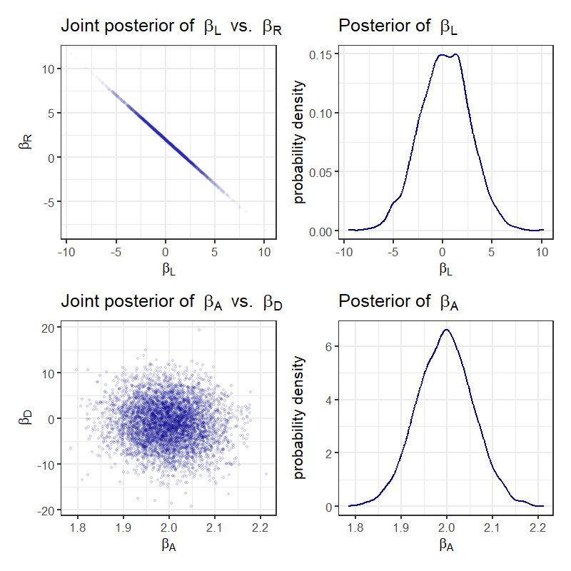
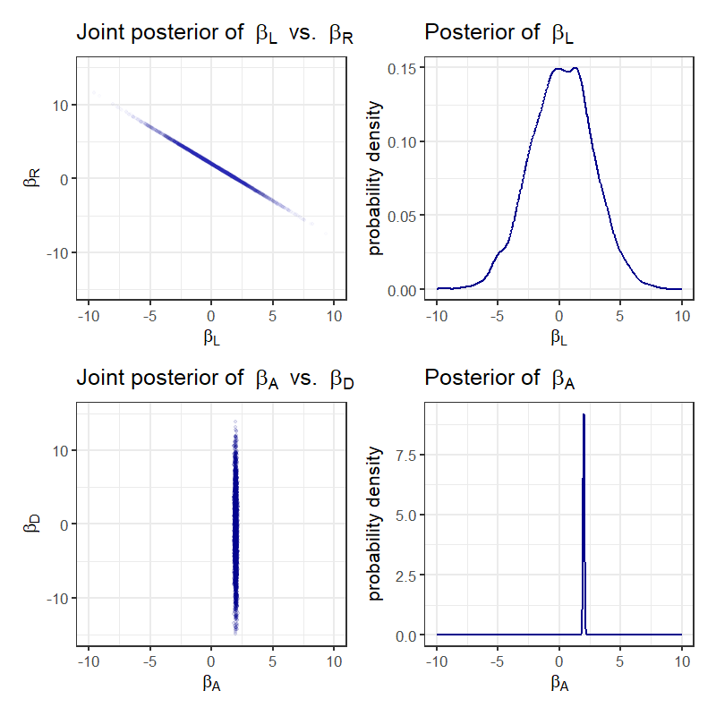

Designing and Analyzing Statistical Models
EES 4891-06/5891-01
Bayesian Statistical Methods
Jonathan Magnolia Gilligan
Class #8: Monday February 9, 2026
Summary
- Note how different the scales are for \(\beta_A\) vs. \(\beta_L\).


Summary
- Replotted with equal scales


Explaining the multicollinearity
-
Knowledge of biology

-
Density D is important
- Frequent nursing: watery, low-energy milk, high in sugar (lactose)
- Infrequent nursing: rich, dense, high-energy milk, high in fat

Understanding the problem
Fungus is the big thing that affects the plants’ growth
-
Treatment affects fungus.
- Doesn’t affect plants directly
- Doesn’t always eliminate all fungus
-
Fungus is a better predictor
- But we don’t know how bad fungus will be until after we treat.
-
DAG

## Implied Conditional Independencies## F _||_ H_0 ## H_0 _||_ T ## H_1 _||_ T | F

mdl_fungus <- quap(
alist(
H1 ~ dnorm(mu, sigma),
mu <- H0 * p,
# p is growth rate
p <- a + bT * T + bF * F,
a ~ dlnorm(0, 0.2),
bT ~ dnorm(0, 0.5),
bF ~ dnorm(0, 0.5),
sigma ~ dexp(1)
), data = d)A Better Model
-
DAG

## Implied Conditional Independencies## F _||_ H_0 ## H_0 _||_ T ## H_1 _||_ T | F Conditioning on F induces a D-separation (directional separation) between T and H1.
Remove fungus data from the model.

Other Post-Treatment Bias Problems
-
Suppose we have this DAG:

Fungus F does not influence plant growth.
Moisture M influences both plant growth H1 and fungus F
Fitting our original model falsely implies that treatment benefits plants.
This is a kind of collider effect.

Happiness and Age
- Do people get happier as they get older?
- Suppose:
Everyone’s happiness is something they are born with and it doesn’t change.
Happier people are more likely to get married
Older people are more likely to be married.
-
DAG:

This diagram is a collider: Causal paths from H and A collide at M

Simpson’s Paradox
- Split data into two groups
- Each group has one kind of effect.
- When you look at all the data together, it has the opposite effect.


Categories of Confounding Relationships
- We want to infer \(Y\) from \(X\) and \(Z\)
-
Fork

- \(X \indep Y | Z\)
- Divorce rate
- Post-treatment bias: moisture
-
Pipe

- \(X \indep Y | Z\)
- Post-treatment bias: fungus & treatment


-
Collider

- \(X\ \rlap{\not{}}\!{\indep} Y | Z\)
- Happiness & age
- Trustworthiness vs. newsworthiness
-
Descendant


- All causal DAGs are build of combinations of these four patterns.
Example: Haunted DAG
-
How do parents’ P and grandparents’ G educational attainment influence educational attainment of children C?

-
Problem: there are unmeasured effects here, such as the character of the neighborhood.
Grandparents moved into the neighborhood after they finished school,
-
Parents and children grew up in the neighborhood and are affected by it.


Backdoor Effects
In the age and happiness example, conditioning on the marriage variable created bias,
-
But in the grandparent, parent, and children example, we needed to condition on the neighborhood to avoid bias.
- How can we tell when to condition on a variable?
-
Consider this DAG:

How does X affect Y?

-
Backdoor (non-causal) paths from \(X\) to \(Y\):
-
Which backdoor path is open?
- This backdoor is open because it has no internal collider
- If we condition on \(A\), \(C\), or \(U\), it will close the backdoor.
- This backdoor is closed because \(B\) is a collider.
- If we condition on \(B\), it will open the backdoor and introduce a collider effect.
- This backdoor is open because it has no internal collider
-
Closing backdoors:
Automated Analysis
-
Define the DAG
-
Optionally, draw the DAG diagram
coordinates(dag_two_roads) <- list( x = c(U = 0, X = 0, A = 1, B = 1, C = 2, Y = 2), y = c(U = 0, X = 1, A = - 0.5, B = 0.5, C = 0, Y = 1) ) drawdag(dag_two_roads)
-
Analyze to identify which variables to condition on
- Condition on A or C
Backdoors in Waffle-House and Divorce
-
Waffle-House and Divorce

S = Southern state, W = waffle-house restaurants,
A = median age at marriage, M = marriage rate,
and D = divorce rate. -
Identify which variables to condition on
- What does this mean?

-
Backdoors:
- All of these pass through S.
- To close the backdoors, either
- Condition on S, or
- Condition on both A and M.
-
Further analysis: conditional independencies
- If we condition on S, then A and M should both be independent of W
- If we simultaneously condition on A, M, and W, then D should be independent of S.